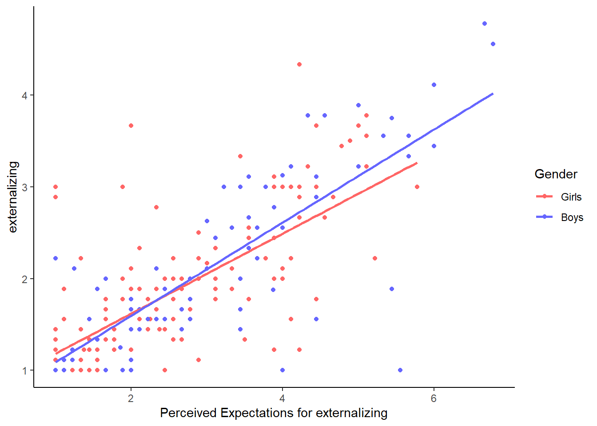
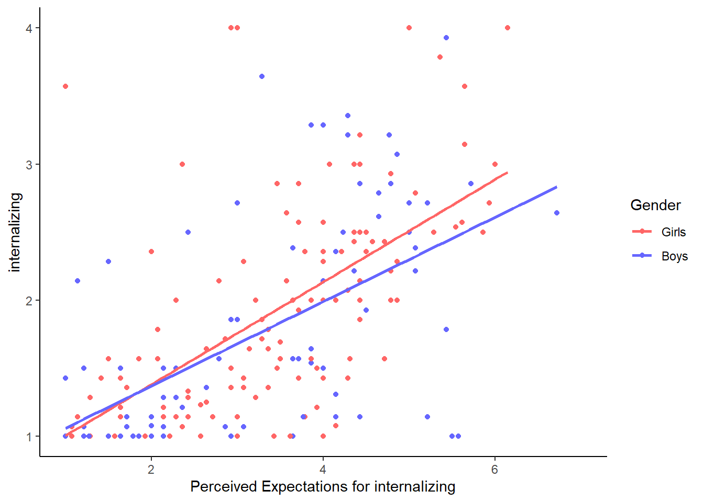
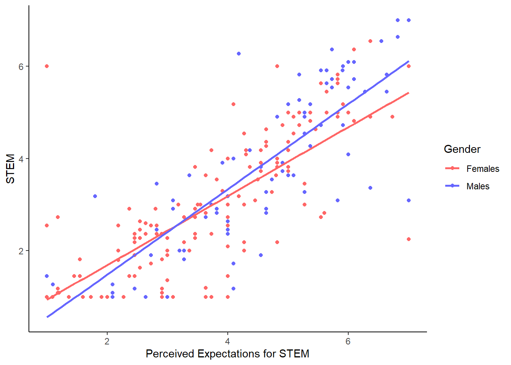
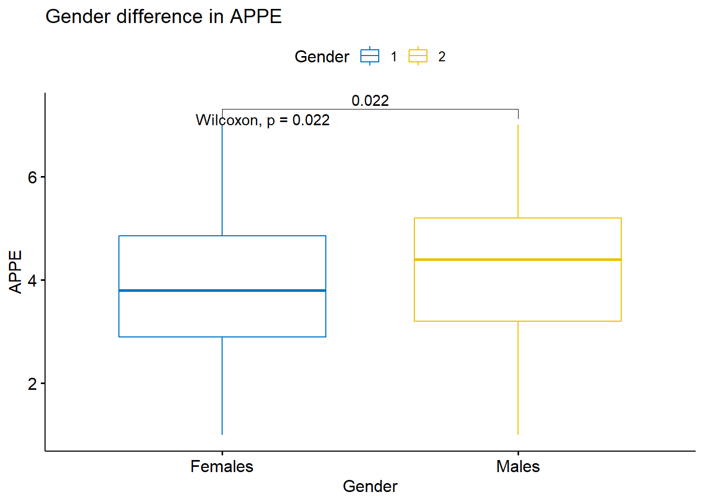
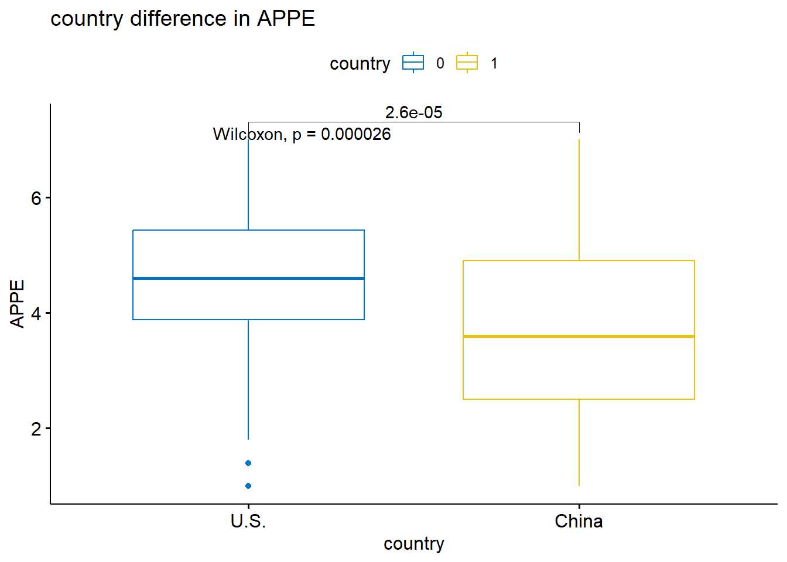

Portfolio 8
library(tidyverse)
library(dplyr)
library(haven)
teen_survey_1<- read_sav("teen_survey_1.sav")
gender<-read_sav("gender.sav")
library(lme4)
library(merTools)
library(semPlot)
library(lavaan)
library(readxl)
library(dplyr)
library(haven)#visualize gender difference
ggplot(gender, aes(x=exter, y=ex, color = factor(Gender))) +
geom_point() +
geom_smooth(method = "lm", se = FALSE) +
scale_color_manual(name = "Gender", labels = c("Girls", "Boys"), values = c("#FF6666", "#6666FF")) +
labs(x="Perceived Expectations for externalizing", y="externalizing") +
theme_classic()## `geom_smooth()` using formula = 'y ~ x'
ggplot(gender, aes(x=inter, y=int, color = factor(Gender))) +
geom_point() +
geom_smooth(method = "lm", se = FALSE) +
scale_color_manual(name = "Gender", labels = c("Girls", "Boys"), values = c("#FF6666", "#6666FF")) +
labs(x="Perceived Expectations for internalizing", y="internalizing") +
theme_classic()## `geom_smooth()` using formula = 'y ~ x'
ggplot(gender, aes(x=pros, y=pr, color = factor(Gender))) +
geom_point() +
geom_smooth(method = "lm", se = FALSE) +
scale_color_manual(name = "Gender", labels = c("Girls", "Boys"), values = c("#FF6666", "#6666FF")) +
labs(x="Perceived Expectations for prosocial behaviors", y="prosocial behaviors") +
theme_classic()## `geom_smooth()` using formula = 'y ~ x'
ggplot(gender, aes(x=stem, y=st, color = factor(Gender))) +
geom_point() +
geom_smooth(method = "lm", se = FALSE) +
scale_color_manual(name = "Gender", labels = c("Females", "Males"), values = c("#FF6666", "#6666FF")) +
labs(x="Perceived Expectations for STEM", y="STEM") +
theme_classic()## `geom_smooth()` using formula = 'y ~ x'
ggplot(gender, aes(x=APPE, y=st, color = factor(Gender))) +
geom_point() +
geom_smooth(method = "lm", se = FALSE) +
scale_color_manual(name = "Gender", labels = c("Females", "Males"), values = c("#FF6666", "#6666FF")) +
labs(x="Perceived parental efficacy", y="STEM motivations") +
theme_classic()## `geom_smooth()` using formula = 'y ~ x'
ggplot(gender, aes(x=APPE, y=ex, color = factor(Gender))) +
geom_point() +
geom_smooth(method = "lm", se = FALSE) +
scale_color_manual(name = "Gender", labels = c("Females", "Males"), values = c("#FF6666", "#6666FF")) +
labs(x="Perceived parental efficacy", y="externalizing") +
theme_classic()## `geom_smooth()` using formula = 'y ~ x'
ggplot(gender, aes(x=APPE, y=int, color = factor(Gender))) +
geom_point() +
geom_smooth(method = "lm", se = FALSE) +
scale_color_manual(name = "Gender", labels = c("Females", "Males"), values = c("#FF6666", "#6666FF")) +
labs(x="Perceived parental efficacy", y="internalizing") +
theme_classic()## `geom_smooth()` using formula = 'y ~ x'
ggplot(gender, aes(x=APPE, y=pr, color = factor(Gender))) +
geom_point() +
geom_smooth(method = "lm", se = FALSE) +
scale_color_manual(name = "Gender", labels = c("Females", "Males"), values = c("#FF6666", "#6666FF")) +
labs(x="Perceived parental efficacy", y="prosocial behaviors") +
theme_classic()## `geom_smooth()` using formula = 'y ~ x'
#seems like there were interactions between APPE and gender in intenalizing, externalizing, and prosocial behaviors.
#girls internalizing and prosocial behavirs were all negatively impacted by APPE, which is interesting. I wonder why that is the case.library(ggpubr)
compare_means(APPE ~ Gender, data = gender)## # A tibble: 1 × 8
## .y. group1 group2 p p.adj p.format p.signif method
## <chr> <chr> <chr> <dbl> <dbl> <chr> <chr> <chr>
## 1 APPE 2 1 0.0217 0.022 0.022 * Wilcoxonmy_comparisons <- list( c("1", "2") )
ggboxplot(gender, x = "Gender", y = "APPE",
color = "Gender", palette = "jco")+
labs(title= "Gender difference in APPE", x="Gender", y="APPE", color="Gender") +
scale_x_discrete(labels=c('Females', 'Males'))+
stat_compare_means(comparisons = my_comparisons)+
stat_compare_means(label.y = 7) 
#significant gender difference in APPE
compare_means(APPE ~ country, data = teen_survey_1)## # A tibble: 1 × 8
## .y. group1 group2 p p.adj p.format p.signif method
## <chr> <chr> <chr> <dbl> <dbl> <chr> <chr> <chr>
## 1 APPE 0 1 0.0000315 0.000031 0.000031 **** Wilcoxonmy_comparisons <- list( c("0", "1") )
ggboxplot(gender, x = "country", y = "APPE",
color = "country", palette = "jco")+
labs(title= "country difference in APPE", x="country", y="APPE", color="country") +
scale_x_discrete(labels=c('U.S.', 'China'))+
stat_compare_means(comparisons = my_comparisons)+
stat_compare_means(label.y = 7) 
#significant country difference in APPEcompare_means(APPE ~ Gender, data = gender)## # A tibble: 1 × 8
## .y. group1 group2 p p.adj p.format p.signif method
## <chr> <chr> <chr> <dbl> <dbl> <chr> <chr> <chr>
## 1 APPE 2 1 0.0217 0.022 0.022 * Wilcoxonmy_comparisons <- list( c("1", "2") )
ggboxplot(gender, x = "Gender", y = "APPE",
color = "Gender", palette = "jco")+
labs(title= "Gender difference in APPE", x="Gender", y="APPE", color="Gender") +
scale_x_discrete(labels=c('Females', 'Males'))+
stat_compare_means(comparisons = my_comparisons)+
stat_compare_means(label.y = 7)+
scale_color_manual(name = "Gender", labels = c("Females", "Males"), values = c("#FF6666", "#6666FF")) ## Scale for colour is already present.
## Adding another scale for colour, which will replace the
## existing scale.
library(tidyverse)
library(dplyr)
library(haven)
Mother_and_teen_data <- read_sav("Mother_and_teen_data.sav")
#delete the NA from Race3
library(tidyverse)
library(dplyr)
library(haven)
mt <- Mother_and_teen_data %>%
filter(!is.na(Race3)) %>%
mutate(ad_deviance=CD_1 + CD_2 + CD_3)compare_means(PSE ~ Race3, data = mt)## # A tibble: 3 × 8
## .y. group1 group2 p p.adj p.format p.signif method
## <chr> <chr> <chr> <dbl> <dbl> <chr> <chr> <chr>
## 1 PSE 1 2 0.00000460 0.000014 0.0000046 **** Wilcoxon
## 2 PSE 1 3 0.0884 0.088 0.088 ns Wilcoxon
## 3 PSE 2 3 0.0125 0.025 0.013 * Wilcoxonmy_comparisons <- list( c("1", "2"), c("1", "3"), c("2", "3") )
ggboxplot(mt, x = "Race3", y = "PSE",
color = "Race3", palette = "jco")+
labs(title= "Cultural Difference in PSE", x="Race/Ethnicity", y="PSE", color="Race/Ethnicity") +
scale_x_discrete(labels=c('White', 'Latina', 'African American'))+
stat_compare_means(comparisons = my_comparisons)+
stat_compare_means(label.y = 7)+
scale_color_manual(name = "Race/Ethnicity", labels = c("European American", "Latinx", "African American"), values = c("#FF6666", "#6666FF", "#137735")) ## Scale for colour is already present.
## Adding another scale for colour, which will replace the
## existing scale.